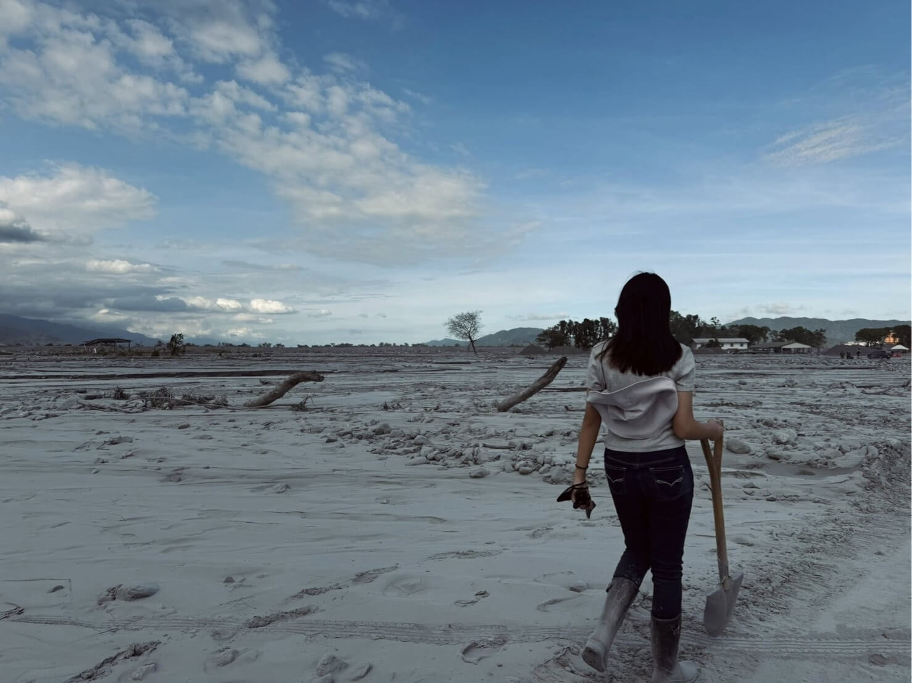

成員姓名
職位名稱
這裡是成員的詳細介紹文字。你可以描述他們在專案中的具體貢獻、專業背景，或是對民防議題的看法。

「民防」顧名思義即是全民國防，台灣民防協會是有一群有志的愛國志士所組成的非政府組織（NGO) 旨在提升台灣社會整體的「韌性」。當天然災害（如地震、颱風）降臨或軍事衝突觸發時，使一般民眾具備自我保護與互助的能力，而非只能仰賴政府的力量。
或向下滑動探索 →何謂「民防」？顧名思義，它是「民間防衛」與「全社會韌性」的具體實踐。
在本次專題中，我們團隊親自走訪了「台灣民防協會」的學者專家與「高默防衛（S.T.A）」民間訓練團體。透過深度訪談與實地觀察，我們打破了過去「民防等於軍警專利」的迷思。我們發現：當天然災害（如地震、颱風）降臨，或發生重大無預警危機時，民防不僅是止血帶與無線電，它更包含了弱勢照顧、物資分配與金融避險。它能賦予一般民眾自我保護與相互救援的能力，讓公民社會成為政府之外最強大的支撐網絡。

職位名稱
這裡是成員的詳細介紹文字。你可以描述他們在專案中的具體貢獻、專業背景，或是對民防議題的看法。